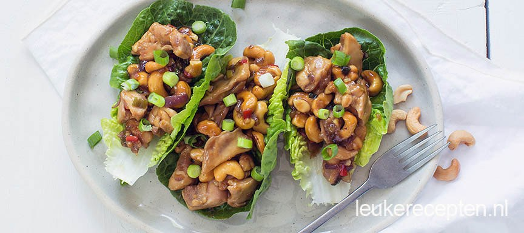

Recept: Cashew slamwrap

- 100 gr noedels
- 300 gr biefstukpuntjes
- 1 komkommer
- 100 gr mango
- 1 rode paprika
- 250 gr sperziebonen
- handje cashewnoten
Bereiding
-
Snijd de kip in stukjes. Snipper de ui, rode peper en knoflook en bak in
een (wok)pan met een beetje sesamolie. Voeg de kip toe. Hak de bosui in
ringetjes en voeg toe aan de pan samen met de cashewnoten. Roer dan de
sojasaus, oestersaus en suiker er door en laat het mengsel 10 minuten
pruttelen.
-
Mocht het nog erg waterig zijn kun je het iets langer laten pruttelen of
een theelepel maizena gemengd met een eetlepel water aan toevoegen. Leg
de blaadjes sla op een bord en vul met de kip cashew. Bestrooi eventueel
nog met wat extra bosui.